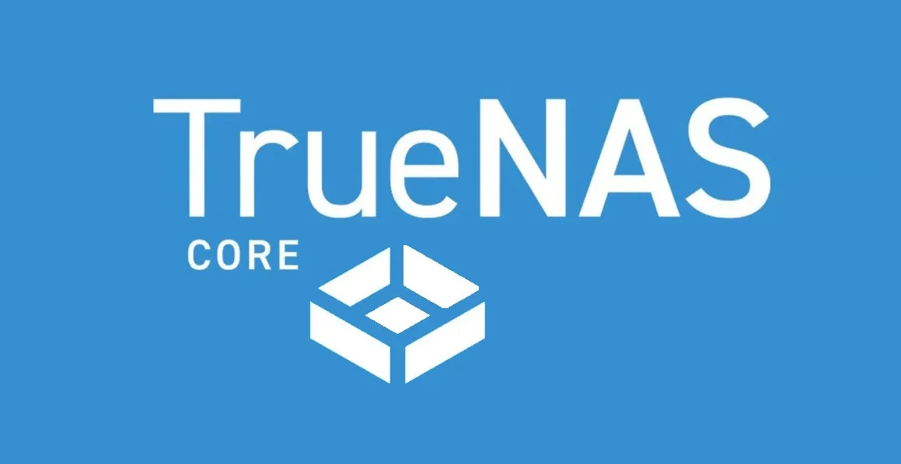
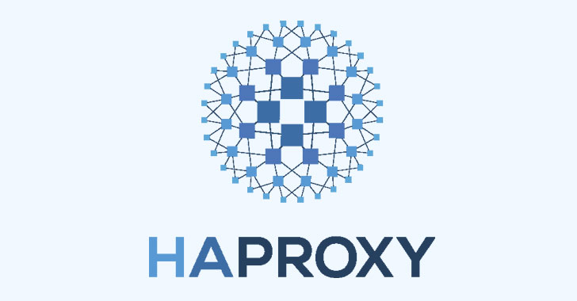
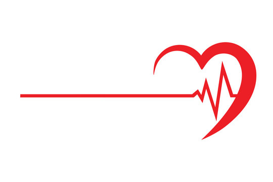
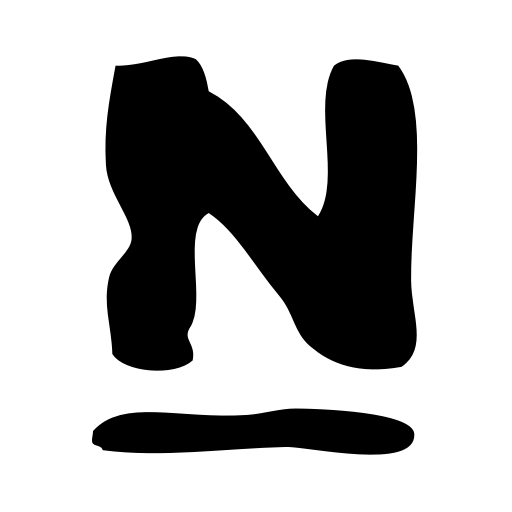
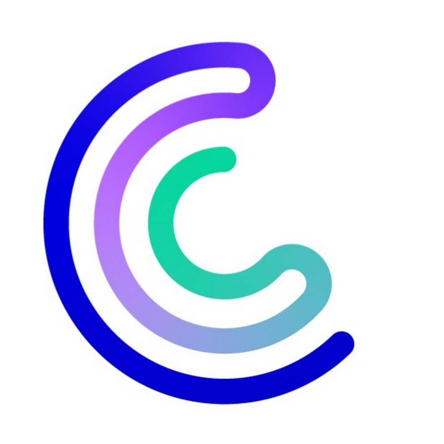
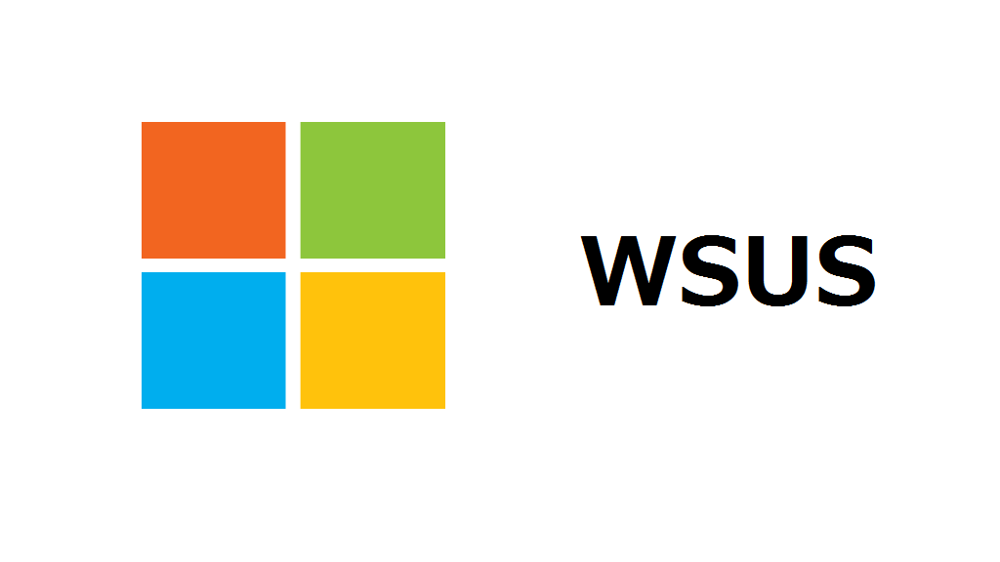
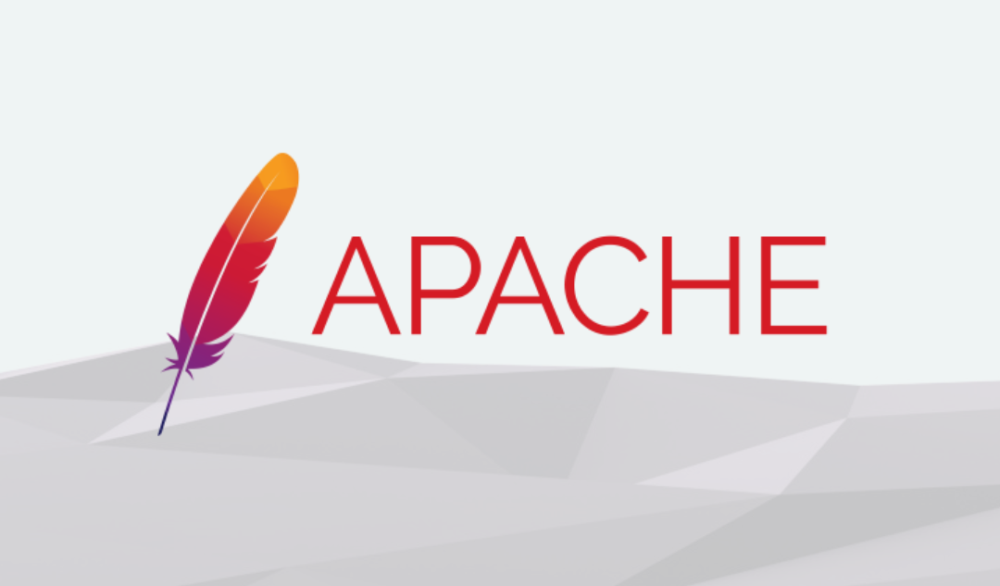
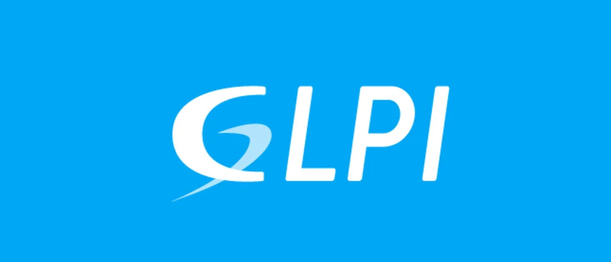
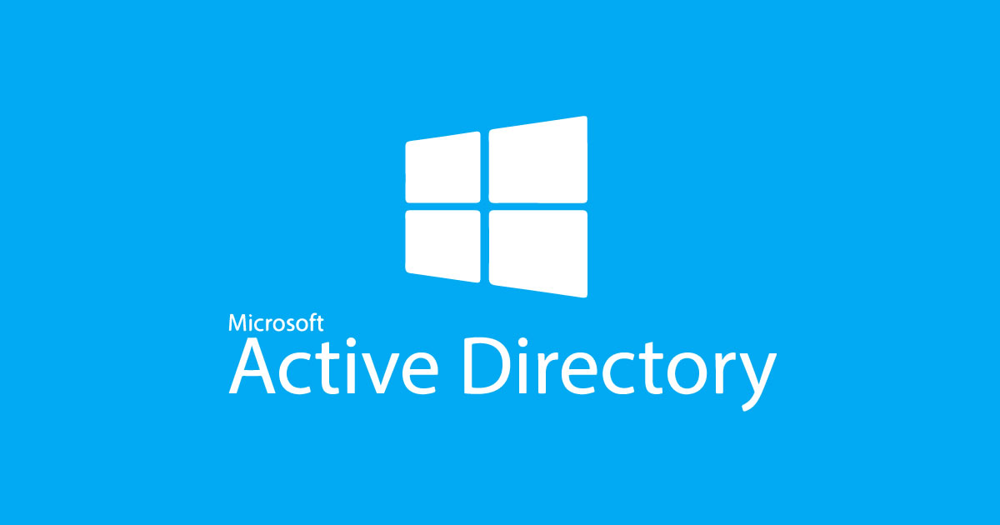

Mes Projets
Découvrez mes réalisations et applications
Voyage en C# :
Calculateur de montant de billets d'avion prenant en compte plusieurs paramètre, cliquer sur la photo pour le téléchargement.
Calculatrice en C# :
Programme représentant une calculatrice , cliquer sur la photo pour le téléchargement.

Truenas :
Serveur de sauvegardes et restaurations de données via Truenas

HAProxy
Haute disponibilité et répartition des charges d'un serveur web avec HAProxy

Heartbeat
Haute disponibilité et tolérance aux pannes d'un serveur web avec Heartbeat

Jardins Saint Eloi
Création d'un site pour la société Les Jardins de Saint-Eloi, spécialisée dans la vente de fleurs exotiques et autres produits locaux

Nagios
La surveillance des équipements et des systèmes

Centreon
La surveillance des équipements et des systèmes

WSUS
Serveur de mise a jour centraliser basés sur Windows server

Apache
Logiciel de serveur web gratuit et open-source

Glpi
GLPI est une application web qui aide les entreprises à gérer leur système d'information

ADDS
Planificattion de rôles pour un serveur AD